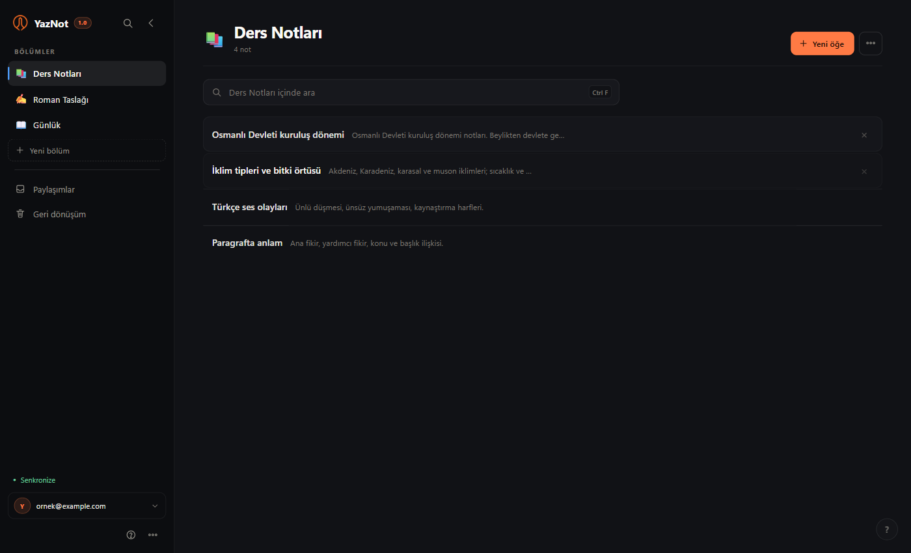

Önce cihaz
Yazdığın an bu cihazda kaydedilir. İnternet yokken de devam edersin; bağlantı gelince değişiklikler sessizce eşitlenir.
YazNot 1.0 · Windows + web
Aklındaki cümleyi kaybetmemek için tasarlandı. Windows'ta çevrimdışı çalışır, telefonda ana ekranına eklenir; aynı hesapla her cihazda aynı defter.

37 saniye
Ne yaptığını gösteren sessiz bir tur. Süs değil, ürün.
Neden farklı
YazNot'u daha çok özellik için değil, daha az şeyi kaçırmak için yaptık.
Yazdığın an bu cihazda kaydedilir. İnternet yokken de devam edersin; bağlantı gelince değişiklikler sessizce eşitlenir.
Türkçe ve İngilizce konuşma, cihazındaki modelle yazıya dönüşür. Kayıt bir sunucuya gönderilmez; model bir kez indirilir, sonra çevrimdışı çalışır.
Odak modu, kitap gibi okuma, toplu taşıma, geri dönüşüm ve günlük yedek. Ayrıntılar menülerde; yazarken önünde değil.
Her yerde
Masaüstünde uzun yazılar, telefonda hızlı notlar. İkisi aynı hesapta buluşur.
Windows
4,4 MB'lık tek kurulum. İnternet olmadan yaz; bağlantı gelince eşitle.
İlk açılışta Windows uyarırsa: Daha fazla bilgi → Yine de çalıştır.
Telefon
Tarayıcıda aç, ana ekranına ekle. Ayrı mağaza indirmesi yok; aynı hesap, aynı notlar.
Android: Uygulamayı yükle · iPhone: Paylaş → Ana Ekrana Ekle
Telefonda aç →Kılavuz
Kılavuz uygulamanın içinde; çevrimdışı. PDF sürümü de aynı dili konuşur.
PDF · 7 sayfa · Türkçe